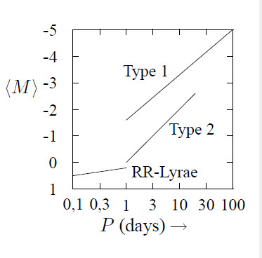

The parallax is mostly used to determine distances in nearby space. The parallax is the angular difference between two measurements of the position of the object from different view-points. If the annual parallax is given by \(p\), the distance \(R\) of the object is given by \(R=a/\sin(p)\), in which \(a\) is the radius of the Earth’s orbit. The clusterparallax is used to determine the distance of a group of stars by using their motion w.r.t. a fixed background. The tangential velocity \(v_{\rm t}\) and the radial velocity \(v_{\rm r}\) of the stars along the sky are given by
\[v_{\rm r}=V\cos(\theta)~~~,~~~v_{\rm t}=V\sin(\theta)=\omega R\]
where \(\theta\) is the angle between the star and the point of convergence and \(\hat{R}\) the distance in pc. This results, with \(v_{\rm t}=v_{\rm r}\tan(\theta)\), in:
\[R=\frac{v_{\rm r}\tan(\theta)}{\omega}~\Rightarrow~\hat{R}=\frac{1''}{p}\] where \(p\) is the parallax in arc seconds. The parallax is then given by \[p=\frac{4.74\mu}{v_{\rm r}\tan(\theta)}\]

with \(\mu\) the proper motion of the star in \(''\)/yr. A method to determine the distance of objects which are somewhat further away, like galaxies and star clusters, uses the period-Brightness relation for Cepheids. This relation is shown in the above figure for different types of stars.
The brightness is the total radiated energy per unit of time. Earth receives \(s_0=1.374\) kW/m\(^2\) from the Sun. Hence, the brightness of the Sun is given by \(L_\odot=4\pi r^2s_0=3.82\cdot10^{26}\) W. It is also given by:
\[L_\odot=4\pi R_\odot^2\int\limits_0^\infty \pi F_\nu d\nu\]
where \(\pi F_\nu\) is the monochromatic radiation flux. At the position of an observer this is \(\pi f_\nu\), with \(f_\nu=(R/r)^2F_\nu\) if absorption is ignored. If \(A_\nu\) is the fraction of the flux which reaches Earth’s surface, the transmission factor is given by \(R_\nu\) and the surface of the detector is given by \(\pi a^2\), then the apparent brightness \(b\) is given by:
\[b=\pi a^2\int\limits_0^\infty f_\nu A_\nu R_\nu d\nu\]
The magnitude \(m\) is defined by:
\[\frac{b_1}{b_2}=(100)^{\frac{1}{5}(m_2-m_1)}=(2.512)^{m_2-m_1}\]
because the human eye perceives light intensities logaritmicaly. From this follows that \(m_2-m_1=2.5\cdot^{10}\log(b_1/b_2)\), or: \(m=-2.5\cdot^{10}\log(b)+C\). The apparent brightness of a star if this star would be at a distance of 10 pc is called the absolute brightness \(B\): \(B/b=(\hat{r}/10)^2\). The absolute magnitude is then given by \(M=-2.5\cdot^{10}\log(B)+C\), or: \(M=5+m-5\cdot^{10}\log(\hat{r})\). When an interstellar absorption of \(10^{-4}\)/pc is taken into account one finds:
\[M=(m-4\cdot10^{-4}\hat{r})+5-5\cdot^{10}\log(\hat{r})\]
If a detector detects all radiation emitted by a source one would measure the absolute bolometric magnitude. If the bolometric correction \(BC\) is given by
\[BC=2.5\cdot^{10}\log\left(\frac{\mbox{Energy flux received}}{\mbox{Energy flux detected}}\right)= 2.5\cdot^{10}\log\left(\frac{\int f_\nu d\nu}{\int f_\nu A_\nu R_\nu d\nu}\right)\]
then: \(M_b=M_V-BC\) where \(M_V\) is the visual magnitude. Further \[M_b=-2.5\cdot^{10}\log\left(\frac{L}{L_\odot}\right)+4.72\]
The radiation energy passing through a surface \(dA\) is \(dE=I_\nu(\theta,\varphi)\cos(\theta)d\nu d\Omega dAdt\), where \(I_\mu\) is the monochromatical intensity \( Wm^{-2} sr^{-1} Hz^{-1} \)].
When there is no absorption the quantity \(I_\nu\) is independent of the distance to the source. Planck’s law holds for a black body:
\[I_\nu(T)\equiv B_\nu(T)=\frac{c}{4\pi}w_\nu(T)=\frac{2h\nu^3}{c^2}\frac{1}{\exp(h\nu/kT)-1}\]
The radiation transport through a layer can then be written as: \[\frac{dI_\nu}{ds}=-I_\nu\kappa_\nu+j_\nu\] Here, \(j_\nu\) is the coefficient of emission and \(\kappa_\nu\) the coefficient of absorption. \(\int ds\) is the thickness of the layer. The optical thickness \(\tau_\nu\) of the layer is given by \(\tau_\nu=\int\kappa_\nu ds\). The layer is optically thin if \(\tau_\nu\ll1\), the layer is optically thick if \(\tau_\nu\gg1\). For a stellar atmosphere in LTE: \(j_\nu=\kappa_\nu B_\nu(T)\). Then also :
\[I_\nu(s)=I_\nu(0){\rm e}^{-\tau_\nu}+B_\nu(T)(1-{\rm e}^{-\tau_\nu})\]
The structure of a star is described by the following equations:
\[\begin{aligned} \frac{dM(r)}{dr}&=&4\pi\varrho(r)r^2\\ \frac{dp(r)}{dr}&=&-\frac{GM(r)\varrho(r)}{r^2}\\ \frac{L(r)}{dr}&=&4\pi\varrho(r)\varepsilon(r)r^2\\ \left(\frac{dT(r)}{dr}\right)_{\rm rad}&=&-\frac{3}{4}\frac{L(r)}{4\pi r^2}\frac{\kappa(r)}{4\sigma T^3(r)}~,~~\mbox{(Eddington), or}\\ \left(\frac{dT(r)}{dr}\right)_{\rm conv}&=&\frac{T(r)}{p(r)}\frac{\gamma-1}{\gamma}\frac{dp(r)}{dr}~,~~\mbox{(convective energy transport)}\end{aligned}\]
Further, for stars of the solar type, the composing plasma can be described as an ideal gas:
\[p(r)=\frac{\varrho(r)kT(r)}{\mu m_{\rm H}}\]
where \(\mu\) is the average molecular mass, usually well approximated by:
\[\mu=\frac{\varrho}{nm_{\rm H}}=\frac{1}{2X+\frac{3}{4}Y+\mbox{$\frac{1}{2}$}Z}\]
where \(X\) is the mass fraction of H, \(Y\) the mass fraction of He and \(Z\) the mass fraction of the other elements. Further :
\[\kappa(r)=f(\varrho(r),T(r),\mbox{composition})~~\mbox{and}~~ \varepsilon(r)=g(\varrho(r),T(r),\mbox{composition})\]
Convection will occur when the star meets the Schwartzschild criterium:
\[\left(\frac{dT}{dr}\right)_{\rm conv}<\left(\frac{dT}{dr}\right)_{\rm rad}\]
Otherwise the energy transfer takes place by radiation. For stars in quasi-hydrostatic equilibrium the approximations \(r=R\), \(M(r)=M\), \(dM/dr=M/R\), \(\kappa\sim\varrho\) and \(\varepsilon\sim\varrho T^\mu\) hold (this last assumption is only valid for stars on the main sequence). For pp-chains holds \(\mu\approx5\) and for the CNO chains holds \(\mu=12\) tot 18. It can be derived that \(L\sim M^3\): the mass-brightness relation. Further: \(L\sim R^4\sim T^8_{\rm eff}\). This results in the equation for the main sequence in the Hertzsprung-Russell diagram:
\[^{10}\log(L)=8\cdot^{10}\log(T_{\rm eff})+\mbox{constant}\]
The net reaction from which most stars gain their energy is: \(\rm 4{}^1H\rightarrow{}^4He+2e^++2\nu_{\rm e}+\gamma\).
This reaction produces 26.72 MeV. Two reaction chains are responsible for this reaction. The slowest, speed-limiting reaction is shown in boldface. The energy between brackets is the energy carried away by the neutrino.
Both \(^7\)Be chains become more important with raising \(T\).
| \(\longrightarrow\) | \(\searrow\) | |||
| \(\nearrow\) | \(\rightarrow\) | \(\rm~^{15}N+p^+\rightarrow\alpha+^{12}C\) | \(\rm^{15}N+p^+\rightarrow~^{16}O+\gamma\) | |
| \(\downarrow\) | \(\downarrow\) | |||
| \(\rm^{15}O+e^+\rightarrow~^{15}N+\overline{\nu}\) | \(\rm^{12}C+p^+\rightarrow{}^{13}N+\gamma\) | \(\rm^{16}O+p^+\rightarrow~^{17}F+\gamma\) | ||
| \(\uparrow\) | \(\downarrow\) | \(\downarrow\) | ||
| \(\bf ^{14}N+p^+\rightarrow~^{15}O+\gamma\) | \(\rm^{13}N\rightarrow~^{13}C+e^++\nu\) | \(\rm^{17}F\rightarrow~^{17}O+e^++\nu\) | ||
| \(\downarrow\) | \(\downarrow\) | |||
| \(\nwarrow\) | \(\leftarrow\) | \(\rm ^{13}C+p^+\rightarrow{}^{14}N+\gamma\) | \(\rm^{17}O+p^+\rightarrow\alpha+{}^{14}N\) | |
| \(\longleftarrow\) | \(\swarrow\) | |||